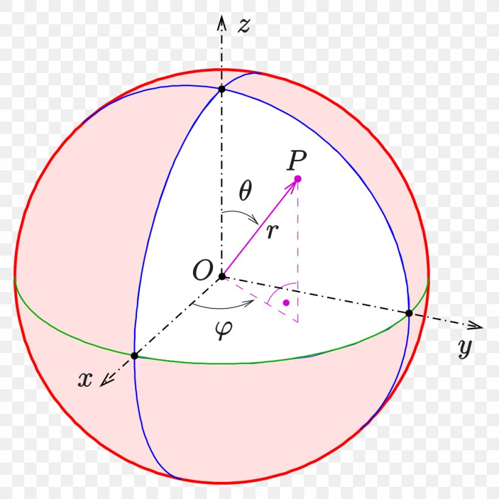
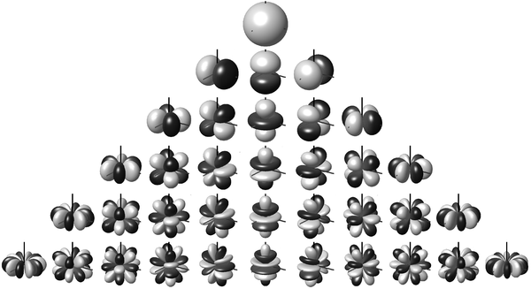

Angular Momentum
Classical Mechanics
We saw the classical rotation operator \(\hat R_{\hat n}(d\phi)\vec v = \vec v + \hat n \times \vec v d\phi\), which applies to any vector \(\vec v\), around any unit vector \(\hat n\). The following is a brief recap (I don't think I explained it very well the first time, anyway). The infinitesimal generator is \(G(\vec r, \vec p) = \hat n \cdot (\vec r \times \vec p) = \hat n \cdot \vec L\), where orbital angular momentum \(\vec L\) is defined as \(\vec L = \vec r \times \vec p\). Classically, we also know that generators have the following property: \[ \frac{dA(\vec r, \vec p)}{d\phi} = \{A(\vec r, \vec p), \hat n \cdot \vec L\} \] for some function \(A\) with the same variables as the generator (in this case, \(\hat n \cdot \vec L\)), see the demonstration here.A scalar quantity \(S\) (which by definition, is invariant under rotation) naturally has \(\frac{dS}{d\phi} = 0\), so \(\{S, \hat n \cdot \vec L = 0\}\) also. Because this is true for any axis \(\hat n\) that we want to rotate around, we can say the following: \[\begin{align} \{S, \hat n\cdot\vec L\} &= 0 \\ &= \{S, \sum_in_iL_i\} = \{S, n_iL_i\} + \{S, n_jL_j\} + \{S, n_kL_k\} \\ 0 &= n_i\{S, L_i\} + n_j\{S, L_j\} + n_k\{S, L_k\} \end{align}\] since \(\hat n\) can be anything, and point in any direction, \(n_i, n_j, n_k\) can be anything, as long as the length of vector \((n_i, n_j, n_k)\) is 1. Thus, the only solution is that each \(\{S, L_i\} = 0\).
Because \(L^2 = \vec L \cdot \vec L\), \(\{L^2, \hat L_i\} = 0\).
What about vectors? For vector \(\vec A\) that is rotated over time by some very small angle \(\Delta\phi\), we have: \[\begin{align} \frac{d\vec A}{d\phi} = \lim_{\Delta\to 0}\frac{\hat R_{\hat n}(\Delta\phi)\vec A - \vec A}{\Delta \phi} = \hat n \times \vec A \end{align}\] where \(\hat R_{\hat n}(\Delta\phi)\vec A\) is the vector after an infinitesimal rotation, and \(\vec A\) is the original vector. For very small angles, the rotation is the same as a displacement in a direction perpendicular to both the axis of rotation and original vector (hence the cross product), with a length of \(\sin\theta \approx \theta\) (see the discussion on the classical rotation linked earlier). This means that \[\begin{align} \frac{d\vec A}{d\phi} = \hat n \times \vec a = \{\vec A, \hat n \cdot \vec L\} \end{align}\] and again, because this is true for all \(\hat n\), we can draw a similar conclusion: \[\begin{align} \{\vec A, \hat n \cdot \vec L\} &= \{(A_i, A_j, A_k), \sum_l n_lL_l\} \\ &= (\{A_i, \sum_l n_lL_l\}, \{A_j, \sum_l n_lL_l\}, \{A_k, \sum_l n_lL_l\}) \\ &= (\sum_l\{A_i, n_lL_l\}, \sum_l\{A_j, n_lL_l\}, \sum_l\{A_k, n_lL_l\}) \tag{1} \\ = \hat n \times \vec A &= ((n \times \vec A)_i, (n \times \vec A)_j, (n \times \vec A)_k) \\ &= (\sum_{jk}\epsilon_{ijk}n_jA_k, \sum_{jk}\epsilon_{jjk}n_jA_k, \sum_{jk}\epsilon_{kjk}n_jA_k) \tag{2} \\ \end{align}\] Setting (1) and (2) equal implies that \(\sum_l\{A_i, n_lL_l\} = \sum_{jk}\epsilon_{ijk}n_jA_k\), and so on. We can expand this even further: \[\begin{align} \sum_l\{A_i, n_lL_l\} &= \sum_{jk}\epsilon_{ijk}n_jA_k \\ \{A_i, n_iL_i\} + \{A_i, n_jL_j\} + \{A_i, n_kL_k\} &= \sum_{k}\epsilon_{iik}n_jA_k + \sum_{k}\epsilon_{ijk}n_jA_k + \sum_{k}\epsilon_{ikk}n_jA_k \\ \end{align}\] which is best summarized as \[\begin{align} \{A_i, n_jL_j\} &= \sum_{k}\epsilon_{ijk}n_jA_k \\ \{A_i, L_j\} &= \sum_{k}\epsilon_{ijk}A_k \\ &= \epsilon_{iji}A_i + \epsilon_{ijj}A_j + \epsilon_{ijk}A_k \\ &= 0 + 0 + \epsilon_{ijk}A_k \\ \{A_i, L_j\} &= \epsilon_{ijk}A_k \end{align}\] or, since both the Poisson bracket and \(\epsilon_{ijk}\) are anti-symmetric, \(\{L_i, A_j\} = \epsilon_{ijk}A_k\). Then, we can say \(\{L_i, L_j\} = \epsilon_{ijk}L_k\).
Quantum Mechanics
Rotation and the Total angular momentum operator. Rotation is a unitary transformation with a single parameter \(\phi\), we use Stone's theorem to write the rotation operator \(\hat D(R)\) as \(\hat D(R) = e^{-i\phi (\hat n\cdot\hat{\vec J})}\). In this case, \(\hat{\vec J}\) is the infinitesimal generator of rotation, which is NOT the same as orbital angular momentum \(\hat L\); it has been shown through experiment that intrinsic spin \(\hat{\vec S}\) contributes to total angular momentum, so \(\hat{\vec J} = \hat{\vec L} + \hat{\vec S}\).We previously showed that \(\{A, B\} = [\hat A, \hat B]/(i\hbar)\), so we can use the results about the Poisson bracket from the previous section of this page to find the commutator between \(\hat J_i\) and other operators. \[\begin{align} \{L^2, \hat L_i\} = 0 &\to [\hat J^2, \hat J_i] = 0 \tag{3} \\ \{L_i, L_j\} = \epsilon_{ijk}L_k &\to [\hat J_i, \hat J_j] = i\hbar\epsilon_{ijk}\hat J_k \tag{4} \\ \end{align}\] We also demonstrated in class that \([\hat L_i, \hat L_j] = i\hbar\epsilon_{ijk}\hat L_k\), but that's not really relevant to the rest of this page, so you'll just have to look at my week 14 notes...
The spectrum of \(\hat J_z\) and \(\hat J^2\)
By convention, we find the spectrum of \(\hat J_z\), and can then find the spectra of \(\hat J_x\) and \(\hat J_y\) via rotation. For example, if we want to measure \(\hat J_x\) but for some reason can only perform measurements along the \(z\)-axis, we can rotate the system so that the \(x\)-axis is now aligned to the \(z\)-axis, make our measurement, and then rotate the system back to the orientation it was in before. Mathematically: \[\hat J_x = e^{-i\hat J_y \pi/2}\hat J_z e^{i\hat J_y \pi/2}\] \[\hat J_y = e^{i\hat J_x \pi/2}\hat J_z e^{-i\hat J_x \pi/2}\] Where \(e^{-i\hat J_y \pi/2}\) is our unitary operator that rotates the system around the \(y\)-axis, or in other words, performs a rotation in the \(x-z\)-plane of \(\pi/2\), bringing the \(x\)-axis to the \(z\)-axis. Then, if we know the eigenvalues of \(\hat J_z\), we can find the eigenvalues of \(\hat J_x\) as such: \[\begin{align} \hat J_z|\lambda\rangle &= \lambda|\lambda\rangle \\ e^{i\hat J_y \pi/2}\hat J_x e^{-i\hat J_y \pi/2}|\lambda\rangle &= \lambda|\lambda\rangle \\ \hat J_xe^{-i\hat J_y \pi/2}|\lambda\rangle &= \lambda e^{-i\hat J_y \pi/2}|\lambda\rangle \\ \end{align}\] evidently, the eigenvectors of \(\hat J_x\) are \(e^{-i\hat J_y \pi/2}|\lambda\rangle\), which correspond to the same eigenvalues as \(\hat J_z\) has, \(\lambda\).Introducing ladder operators. It is useful here, as with the harmonic oscillator, to introduces two new ladder operators, in this case, \(\hat J_\pm = \hat J_x \pm i\hat J_y\), where \(\hat J_+^\dagger = \hat J_-\), which commute with other operators as follows: \[\begin{align} [\hat J^2, \hat J_\pm] &= 0 \tag{5} \\ [\hat J_z, \hat J_\pm] &= [\hat J_z, \hat J_x \pm i\hat J_y] = [\hat J_z, \hat J_x] \pm i[\hat J_z, \hat J_y] \\ &\text{Using (4): } \\ &= i\hbar \hat J_y \pm i(-i\hbar)\hat J_x \\ &= \pm \hbar(\hat J_x \pm i\hat J_y) \\ &= \pm\hbar\hat J_\pm \tag{6} \\ [\hat J_+, \hat J_-] &= [\hat J_x + i\hat J_y, \hat J_x - i\hat J_y] \\ &= [\hat J_x, \hat J_x] + [\hat J_x, -i\hat J_y] + [i\hat J_y, \hat J_x] + [i\hat J_y, -i\hat J_y] \\ &= 0 + [\hat J_x, -i\hat J_y] + [i\hat J_y, \hat J_x] + 0 \\ &= -i[\hat J_x, \hat J_y] + i[\hat J_y, \hat J_x] \\ &\text{Using (4) again: } \\ &= -i(i\hbar)\hat J_z + i(-i\hbar)\hat J_z \\ &= 2\hbar\hat J_z \tag{7} \end{align}\] and applying \(\hat J_+\hat J_-\) and \(\hat J_-\hat J_+\) are the same as applying the following: \[\begin{align} \hat J_+\hat J_- &= (\hat J_x + i\hat J_y)(\hat J_x - i\hat J_y) \\ &= \hat J_x^2 + \hat J_y^2 - i\hat J_y\hat J_x -i \hat J_x\hat J_y \\ &= \hat J_x^2 + \hat J_y^2 + i[\hat J_y\hat J_x] \\ &\text{Using (4): } \\ &= \hat J_x^2 + \hat J_y^2 + i(-i\hbar)\hat J_z \\ &= \hat J_x^2 + \hat J_y^2 + \hbar\hat J_z \\ &\text{Using the fact that } \hat J^2 = \hat J_x^2 + \hat J_y^2 + \hat J_z^2 \\ \hat J_+\hat J_- &= \hat J^2 - \hat J_z^2 + \hbar\hat J_z \tag{8} \\ \hat J_-\hat J_+ &= \hat J^2 - \hat J_z^2 - \hbar\hat J_z \tag{9} \\ \end{align}\] Introducing different expressions for eigenvalues. In addition to defining \(\hat J_\pm\), we do one more thing: Because \(\hat J^2\) and \(\hat J_z\) commute (3), the two operators share a basis of common eigenvectors, which we write as such: \[\begin{align} \hat J^2 &= \lambda|k, \lambda, \mu\rangle \\ \hat J_z &= \mu|k, \lambda, \mu\rangle \\ \end{align}\] The expected values for \(\hat J^2\) are all positive or zero. Conceptually, this is apparent, but mathematically we can also say that this is because \[\langle \psi | \hat J^2 | \psi\rangle = \langle \psi | \hat J \hat J | \psi\rangle = ||\hat J | \psi\rangle||^2 \gt 0\] so, the eigenvalues for \(\hat J^2\) must all be positive, or, \(\lambda \gt 0\). This allows us to write \(\lambda\) as \(\hbar^2 j(j+1)\), since \(\hbar^2\) is always positive, \(\lambda\) can be \(0\) if \(j\) is 0 or -1, and \(j(j+1)\) will always be positive if \(j\) is not 0 or -1. We also write \(\mu\) as \(\hbar m\) instead. Note here that \(m\) and \(j\) are both dimensionless quantities, and they can be any real value. Thus we have: \[\begin{align} |k, \lambda, \mu\rangle &\to |k, j, m\rangle \\ \hat J^2 |k, j, m\rangle &= \hbar^2j(j+1)|k, j, m\rangle \\ \hat J_z |k, j, m\rangle &= \hbar m|k, j, m\rangle \end{align}\] These might seem like odd choice, but they make things more convenient.
The action of the ladder operators. Our ladder operators do the following to an eigenstate \(|kjm\rangle\). First, \(\hat J_\pm|kjm\rangle\) is still an eigenvector of \(\hat J^2\), with the exact same eigenvalue as \(|kjm\rangle\): \[\begin{align} \hat J^2\hat J_\pm|kjm\rangle &= \hat J_\pm \hat J^2|kjm\rangle \text{ by (5).} \\ &= \hbar^2j(j+1) \hat J_\pm |kjm\rangle \end{align}\] Next, \(\hat J_\pm|kjm\rangle\) is still an eigenvector of \(\hat J_z\), but with a slightly different eigenvalue than \(|kjm\rangle\): \[\begin{align} \hat J_z \hat J_\pm|kjm\rangle &= (\hat J_\pm \hat J_z \pm \hbar \hat J_\pm) |kjm\rangle \text{ by (6).} \\ &= \hat J_\pm(\hat J_z \pm \hbar)|kjm\rangle = \hat J_\pm (m\hbar \pm \hbar) |kjm\rangle \\ &= \hbar(m\pm 1)\hat J_\pm |kjm\rangle \end{align}\] so, applying \(\hat J_+\) produces an eigenvector with eigenvalue \(\hbar (m+1)\), where \(m\) is incremented, and applying \(\hat J_-\) produces an eigenvector with eigenvalue \(\hbar (m-1)\), where \(m\) is decremented.
We can't, however, just \(\hat J_+\) as many times as we want. \[\begin{align} ||\hat J_+ |kjm\rangle ||^2 &= \langle kjm | \hat J_- \hat J_+|kjm\rangle \\ \text{Using (9):}& \\ &= \langle kjm | (\hat J^2 - \hat J_z^2 - \hbar\hat J_z) | kjm \rangle \\ &= \langle kjm | \hat J^2 | kjm \rangle - \langle kjm | \hat J_z^2 | kjm \rangle - \hbar \langle kjm | \hat J_z | kjm \rangle \\ &= \hbar^2 j(j+1) - (\hbar m)^2 - \hbar^2 m \\ &= \hbar^2 (j(j+1) - m(m+1)) \end{align}\] If \(j(j+1) \le m(m+1) \to j^2 + j \le m^2 + m\), we have the null vector, which is not a valid eigenvector, or a vector with negative length, which is not possible.
The only thing we can determine for certain from this constraint is that for all \(m \ge 0\), we can only apply \(\hat J_+\) and expect to get a valid eigenvector if \(j \gt m\).
We also can't just apply \(\hat J_-\) as many times as we want: \[\begin{align} ||\hat J_- |kjm\rangle ||^2 &= \langle kjm | \hat J_+ \hat J_i|kjm\rangle \\ \text{Using (8):}& \\ &= \langle kjm | (\hat J^2 - \hat J_z^2 + \hbar\hat J_z) | kjm \rangle \\ &= \langle kjm | \hat J^2 | kjm \rangle - \langle kjm | \hat J_z^2 | kjm \rangle + \hbar \langle kjm | \hat J_z | kjm \rangle \\ &= \hbar^2 j(j+1) - (\hbar m)^2 + \hbar^2 m \\ &= \hbar^2 (j(j+1) - m(m-1)) \end{align}\] If \(j(j+1) \le m(m-1)\), we have the null vector which is not a valid eigenvector, or a vector with negative length, which is, again, not possible.
From this constraint we learn that if \(m\lt 0\), \(j^2 + j\) must be greater than \(m^2 - (-|m|) = m^2 + |m|\). Evidently this means \(|m|\) must be less than \(j\).
Putting these two results together:
- If \(m \ge 0\) applying \(\hat J_+\) will only yield an eigenvector if \(j \gt m\)
- If \(m \lt 0\) applying \(\hat J_-\) will only yield an eigenvector if \(|m| \lt j\)
Let's look at the edges of these bounds a little more closely. If \(m=j\) and we apply \(\hat J_+\), we do indeed get the null vector as expected: \[\begin{align} ||\hat J_+ |kjj\rangle ||^2 &= \langle kjj | \hat J_- \hat J_+ |kjj\rangle \\ \text{Using (9):}& \\ &= \langle kjj | (\hat J^2 - \hat J_z^2 - \hbar\hat J_z) | kjj \rangle \\ &= \hbar^2(j(j+1) - j^2 - j) = 0 \end{align}\] and \(m=-j\) and we apply \(\hat J_-\), we also get the null vector as expected: \[\begin{align} ||\hat J_- |kj-j\rangle ||^2 &= \langle kjj | \hat J_+ \hat J_- |kj-j\rangle \\ \text{Using (8):}& \\ &= \langle kj-j | (\hat J^2 - \hat J_z^2 + \hbar\hat J_z) | kj-j \rangle \\ &= \hbar^2j(j+1) - \hbar^2j^2 - \hbar^2j = 0 \end{align}\] In summary:
- Applying the ladder operators to an eigenvalue of \(\hat J^2\) and \(\hat J_z\), \(|kjm\rangle\), yields a new state that is still an eigenstate that corresponds to the same eigenvalue for \(\hat J^2\) (which is in terms of \(j\)) but a different eigenvalue of \(\hat J_z\), where \(m\) is incremented or decremented.
- You can obtain any eigenvector \(|kjm\rangle\) by doing \((\hat J_-)^{j-m} |kjj\rangle\).
- You can apply \(\hat J_+\) to an eigenstate \(|kjm\rangle\) until \(m=j\), after which applying \(\hat J_+\) results in the null vector or an impossible vector with a complex norm.
- Similarly, you can only apply \(\hat J_-\) to an eigenstate \(|kjm\rangle\) until \(m=-k\).
- Additionally, after applying \(\hat J_\pm\), we obtain eigenvector \(|kjm\pm 1\rangle\) with length: \[\sqrt{\hbar^2(j(j+1) - m(m\pm1))}\] Thus we can also write any eigenvector as: \[|kjm\pm 1\rangle = \frac{1}{\hbar\sqrt{j(j+1)-m(m\pm 1)}} \hat J_\pm |kjm\rangle\]
If \(m\) and \(\pm j\) are a non-integer distance apart (mathematically, \(|\pm j-m| \notin \mathbb{N_0}\)) it would be possible to apply the ladder operators, surpass the condition where the null vector appears, and eventually obtain an eigenstate with a negative value.
For example, after applying \(\hat J_-\) to a vector where \(j = 2\) and \(m = -1.5\), we end up with a vector that has length \[\sqrt{\hbar^2(2(2+1) - (-1.5)(-2.5))} = \hbar\sqrt{2.25}\] If we apply \(\hat J_-\) again, we end up with a vector of length \[\sqrt{\hbar^2(2(2+1) - (-2.5)(-3.5))} = \hbar\sqrt{-2.75}\] which doesn't make sense, since we can't have a complex distance. Hence we need \(|j-m| \in \mathbb{N_0}\).
Distances are positive (obviously), so the distance from \(m\) to \(-j\), while it can be written as \(|m-j|\), can also written as \(m-(-|j|) = m+|j| = m+j\), which is always positive, even if \(m\) is negative, because we have already established that \(|m| \le j\). Likewise, the distance from \(m\) to \(j\) can be written as \(j-m\), since the magnitude of \(m\) is always less than \(j\). Putting these two results together:
- \(m+j \in \mathbb{N_0}\)
- \(j-m \in \mathbb{N_0}\)
Degeneracy. Say that we have a fixed value for \(j\) and \(m\). If the value of \(k\) is supposed to resolve dgeneracy, then for two states \(|kjm\rangle\) and \(|k'jm\rangle\), \(\langle kjm|k'jm\rangle = \delta_{kk'}\).
If \(g(j,m)\) is the degeneracy associated with a pair \((j, m)\), then we can say that the eigenspace for a specific pair of values for \(j\) and \(m\), \(\mathcal{E}(j,m)\) is: \[\mathcal{E}(j, m) = \text{span}\overline{\{|kjm\rangle, k=1, 2, \cdots, g(j,m)\}}\] or, in other words, that \(\mathcal{E}(j, m)\) is the vector space formed by all possible linear combinations of the degenerate states \(|kjm\rangle\) of which there are \(g(j,m)\) such states.
As we did during the video lecture on the harmonic oscillator, we can assert that if we apply \(\hat J_\pm\) to two eigenvectors \(|kjm\rangle\) and \(|k'jm\rangle\), the result is two eigenvectors that are still orthogonal (if \(k\neq k'\)): \[\begin{align} \langle k'jm|\hat J_- \hat J_+|kjm\rangle &= \langle k'jm|\hat J^2 - \hat J_z^2 - \hbar\hat J_z|kjm\rangle \text{ from (9)} \\ &= \hbar^2(j(j+1) - m(m+1)) \langle k'jm|kjm\rangle \\ &= \hbar^2(j(j+1) - m(m+1)) \delta_{kk'} \end{align}\] (and similarly, it follows \(\hat J_-|kjm\rangle \perp \hat J_-|k'jm\rangle\)). Thus we see that applying the ladder operators to orthogonal eigenstates produce orthogonal eigenstates that correspond to different values of \(m\) than before, while the corresponding value of \(j\) does not change.
This means that degeneracy is not dependent on the value of \(m\); the number of orthogonal eigenstates that correspond to some \(m\) is the same for any other value of \(m\). In fact, degeneracy depends on \(j\) alone.
The Eigenvalues and Eigenvectors of \(\hat{\vec L}\)
Let's look at (strictly) orbital angular momentum, rather than total angular momentum, which is defined as \(\hat{\vec L} = \hat{\vec r} \times \hat{\vec{p}}\). This can also be written as \(\epsilon_{ijk}\hat r_j\hat p_k\), where the notation implies a summation over \(j\) and \(k\), or, it can also be written as \(\sum_{j=1}^3 \sum_{k=1}^3 \epsilon_{ijk}\hat r_j \hat p_k\).What does this operator look like in the position basis? Now that we're working in three dimensions, we write this as \(\langle \vec r | \hat{\vec L}\) (as opposed to \(\langle x|\hat p\), for example). This is the same as: \[\begin{align} \langle \vec r | \hat{\vec L}= \langle \vec r | (\hat{\vec r} \times \hat{\vec{p}}) &= \langle \vec r | \epsilon_{ijk} \hat r_j \hat p_k \\ &= \epsilon_{ijk} \langle \vec r | \hat r_j \hat p_k \\ &= \epsilon_{ijk} r_j \langle \vec r | \hat p_k \\ &= \epsilon_{ijk} r_j (-i\hbar \frac{\partial}{\partial k} \langle \vec r|) \\ &= -i\hbar (\epsilon_{ijk} r_j \frac{\partial}{\partial k}) \langle\vec r| \\ \langle \vec r | \hat{\vec L} &= -i\hbar (\vec r \times \vec\nabla) \langle \vec r| \\ \end{align}\] where in three dimensions, \(\langle \vec r | \hat p = -i\hbar\vec\nabla\langle \vec r|\), or \(\langle \vec r | \hat p_i = -i\hbar\frac{\partial}{\partial i} \langle\vec r|\) for a specific dimension \(i\).
Operators in spherical coordinates. Because \(\vec r\) scales with distance from the origin (of whatever it is you're orbiting), and \(\vec\nabla = (\frac{\partial}{\partial x}, \frac{\partial}{\partial y}, \frac{\partial}{\partial z})\) and so is inversely related to length, we can expect \(\vec r \times \vec \nabla\) to be invariant under scaling of \(\vec r\) (so under movement towards and away from the origin). Thus, we are motivated to use spherical coordinates.

We do so as follows:
Any vector \(\vec r\) can be described as a vector with length \(r\) pointing in direction \(\hat r\): \(\vec r = r\cdot\hat r\). We can write the direction \(\hat r\) in terms of \(\theta\) and \(\phi\) instead: \[\hat r = \hat z\cos\theta + \sin\theta(\hat x \cos\phi + \hat y\sin\phi)\tag{10}\] which is readily apparent in the diagram above (ignore the fake transparent background... they lied to me), where \(\theta\) lies in the \(z-y\) plane and \(\phi\) lies in the \(x-y\) plane.Thus all we need to do is find \(\vec \nabla\) in spherical coordinates, and then we can write \(\langle \vec r | \vec{\hat L}\) in spherical coordinates as well (which we are doing so we can find \(\vec{\hat L}\)'s eigenvectors and eigenvalues). Given a function \(f(\vec r)\), where \(\vec r\) is written in terms of \(\hat r, \hat \theta, \hat \phi\), any \(\frac{\partial f}{\partial q_i}\) where \(q_i\) can be coordinate \(r\), \(\theta\), or \(\phi\) is: \[\begin{align} \frac{\partial f}{\partial q_i} &= (\frac{\partial r}{\partial q_i}, \frac{\partial \theta}{\partial q_i}, \frac{\partial \phi}{\partial q_i})\cdot(\frac{\partial f}{\partial r}, \frac{\partial f}{\partial \theta}, \frac{\partial f}{\partial \phi}) \\ &= \frac{\partial \vec r}{\partial q_i} \cdot \vec\nabla f \tag{11} \end{align}\] If we know each \(\frac{\partial f}{\partial q_i}\) in terms of \(\vec\nabla f\), we can determine what \(\vec\nabla f\) is in spherical coordinates, and in turn determine what \(\vec\nabla\) is in spherical coordinates. To do this, we need to know each \(\frac{\partial \vec r}{\partial q_i}\). Using (10): \[\begin{align} \frac{\partial \vec r}{\partial r} &= \frac{\partial}{\partial r} r\cdot\hat r \\ &= \frac{\partial}{\partial r} r\cdot(\hat z\cos\theta + \sin\theta(\hat x \cos\phi + \hat y\sin\phi)) \\ &= \hat z\cos\theta + \sin\theta(\hat x \cos\phi + \hat y\sin\phi) \\ &= \hat r \\ \frac{\partial \vec r}{\partial \theta} &= \frac{\partial}{\partial \theta} r\cdot(\hat z\cos\theta + \sin\theta(\hat x \cos\phi + \hat y\sin\phi)) \\ &= r\cdot(-\hat z\sin\theta + \cos\theta(\hat x \cos\phi + \hat y\sin\phi)) \\ &= r\hat\theta \\ \frac{\partial \vec r}{\partial \phi} &= \frac{\partial}{\partial \phi} r\cdot(\hat z\cos\theta + \sin\theta(\hat x \cos\phi + \hat y\sin\phi)) \\ &= r\sin\theta(-\hat x \sin\phi + \hat y\cos\phi) \\ &= r\sin\theta\hat\phi \end{align}\] Aside from just accepting that \[\hat\theta = -\hat z\sin\theta + \cos\theta(\hat x \cos\phi + \hat y\sin\phi) \tag{12}\] and \[\hat\phi = -\hat x \sin\phi + \hat y\cos\phi \tag{13}\] we can see that \(\hat r \times \hat\theta = \hat \phi\), and that \(\hat r\), \(\hat\theta\), and \(\hat\phi\) are orthonormal, and so we can use them as a basis for the three dimensional space: \[ \hat r \times \hat\theta = \det\big( \begin{pmatrix} \hat x & \hat y & \hat z \\ \sin\theta\cos\phi & \sin\theta\sin\phi & \cos\theta \\ \cos\theta\cos\phi & \cos\theta\sin\phi & -\sin\theta \end{pmatrix} \big) \] or, I guess we could also write it using Einstein summation notation, but I don't want to do that. \[\begin{align} \hat r \times \hat\theta &= \hat x(-\sin^2\theta\sin\phi-\cos^2\sin\phi) \\ & - \hat y(-\sin^2\theta\cos\phi - \cos^2\theta\cos\phi) \\ & +\hat z(0) \\ &= \hat x(-\sin\phi(\sin^2\theta+\cos^2\theta)) - \hat y(-\cos\phi(\sin^2\theta + \cos^2\theta)) \\ &= -\hat x\sin\phi + \hat y\cos\phi \\ &= \hat\phi \end{align}\] thus \(\hat r\), \(\hat\theta\), and \(\hat\phi\) are orthogonal. \[\begin{align} ||\hat r||^2 &= ||\hat z\cos\theta + \sin\theta(\hat x \cos\phi + \hat y\sin\phi)||^2 \\ &= \cos^2\theta + (\sin\theta\cos\phi)^2 + (\sin\theta\sin\phi)^2 \\ &= \cos^2\theta + \sin^2\theta\cos^2\phi + \sin^2\theta\sin^2\phi \\ &= \cos^2\theta + \sin^2\theta(\cos^2\phi + \sin^2\phi) \\ &= \cos^2\theta + \sin^2\theta(1) \\ &= 1 \\ ||\hat\theta||^2 &= ||-\hat z\sin\theta + \cos\theta(\hat x \cos\phi + \hat y\sin\phi)||^2 \\ &= \sin^2\theta + \cos^2\theta\cos^2\phi + \cos^2\theta\sin^2\phi \\ &= \sin^2\theta + \cos^2\theta(\cos^2\phi + \sin^2\phi) \\ &= 1 \\ ||\hat\phi||^2 &= ||-\hat x \sin\phi + \hat y\cos\phi||^2 \\ &= \sin^2\phi+\cos^2\phi \\ &= 1 \end{align}\] so \(\hat r\), \(\hat\theta\), and \(\hat\phi\) are not just orthogonal, they are orthonormal.
So, now we know: \[\begin{align} \frac{\partial \vec r}{\partial r} &= \hat r \\ \frac{\partial \vec r}{\partial \theta} &= r\hat\theta \\ \frac{\partial \vec r}{\partial \phi} &= r\sin\theta\hat\phi \end{align}\] using (11), then we can determine what all possible \(\frac{\partial f}{\partial q_i}\) are: \[\begin{align} \frac{\partial f}{\partial r} &= \frac{\partial \vec r}{\partial r} \cdot \vec\nabla f = \hat r \cdot\vec\nabla f \\ \frac{\partial f}{\partial \theta} &= \frac{\partial\vec r}{\partial\theta}\cdot\vec\nabla f = r\hat\theta\cdot\vec\nabla f \\ \frac{\partial f}{\partial\phi} &= \frac{\partial\vec r}{\partial\phi}\cdot\vec\nabla f = r\sin\theta\hat\phi\cdot\vec\nabla f \\ \end{align}\] If we want to define what \(\vec\nabla\) is in spherical coordinates, then naturally we need to define how it behaves along each axis, \(\hat r, \hat\theta, \hat\phi\). We can use the above equations to do so, and say that: \[\begin{align} & \hat r \cdot\vec\nabla = \frac{\partial f}{\partial r} \\ \frac{\partial f}{\partial \theta} = r\hat\theta\cdot\vec\nabla f \to &\hat\theta \cdot \vec\nabla f = \frac{1}{r}\frac{\partial f}{\partial \theta} \\ \frac{\partial f}{\partial\phi} = r\sin\theta\hat\phi\cdot\vec\nabla f \to &\hat\phi\cdot\vec\nabla f = \frac{1}{r\sin\theta}\frac{\partial f}{\partial\phi} \\ \end{align}\] so \[\vec\nabla f = \hat r(\frac{\partial f}{\partial r}) + \hat\theta(\frac{1}{r}\frac{\partial f}{\partial \theta}) + \hat\phi(\frac{1}{r\sin\theta}\frac{\partial f}{\partial\phi})\] or, in more concise notation: \[\vec\nabla f = \hat r \partial_r f + \frac{\hat\theta}{r} \partial_\theta f + \frac{\hat\phi}{r\sin\theta}\partial_\phi f\] which means that in spherical coordinates, \[\vec\nabla = \hat r \partial_r + \frac{\hat\theta}{r} \partial_\theta + \frac{\hat\phi}{r\sin\theta}\partial_\phi \tag{14}\] Finally, we can use (14) to write \[\begin{align} \langle \vec r | \hat{\vec L} &= -i\hbar (\vec r \times \vec\nabla) \langle \vec r| \\ &= -i\hbar (r\cdot\hat r) \times (\hat r \partial_r + \frac{\hat\theta}{r} \partial_\theta + \frac{\hat\phi}{r\sin\theta}\partial_\phi) \langle \vec r|\\ &= -i\hbar ((r\cdot\hat r \times \hat r \partial_r) + (r\cdot\hat r \times \frac{\hat\theta}{r} \partial_\theta) + (r\cdot\hat r \times \frac{\hat\phi}{r\sin\theta}\partial_\phi)) \langle \vec r|\\ &= -i\hbar (0 + \hat\phi\partial_\theta - \frac{1}{\sin\theta}\hat\theta\partial_\phi) \langle \vec r|\\ &= -i\hbar (\hat\phi\partial_\theta - \frac{\hat\theta}{\sin\theta}\partial_\phi) \langle \vec r| \end{align}\] keeping in mind that \(\hat r \times \hat r = 0\), and because \(\hat r \times \hat\theta = \hat \phi\), \(\hat r \times \hat\phi = -\hat\theta\). Also note that, just as we expected, the operator has no dependence on \(r\). With this definition, we can also define \(\hat L_x, \hat L_y, \hat L_z, \hat L^2, \hat L_\pm\) in the position representation, using (13) and (14) when we need to take the dot product between the unit vectors of the Cartesian and Spherical coordinates: \[\begin{align} \hat L_x &= \hat{\vec L} \cdot \hat x \\ &= (-i\hbar (\hat\phi\partial_\theta - \frac{\hat\theta}{\sin\theta}\partial_\phi) \langle \vec r|) \cdot \hat x = -i\hbar (\partial_\theta \hat\phi \cdot \hat x - \frac{1}{\sin\theta}\partial_\phi \hat\theta \cdot \hat x) \langle \vec r| \\ &= -i\hbar (\partial_\theta (-\sin\phi) - \frac{1}{\sin\theta}\partial_\phi \cos\theta\cos\phi) \langle \vec r| \\ &= i\hbar (\sin\phi\partial_\theta + \frac{\cos\phi}{\tan\theta}\partial_\phi) \langle \vec r| \\ \hat L_y &= \hat{\vec L} \cdot \hat y \\ &= -i\hbar (\partial_\theta \hat\phi \cdot \hat y - \frac{1}{\sin\theta}\partial_\phi \hat\theta \cdot \hat y) \langle \vec r| \\ &= -i\hbar (\partial_\theta \cos\phi - \frac{1}{\sin\theta}\partial_\phi \sin\phi\cos\theta) \langle \vec r| \\ &= i\hbar (-\cos\phi\partial_\theta + \frac{\sin\phi}{\tan\theta}\partial_\phi) \langle \vec r| \\ \hat L_z &= \hat{\vec L} \cdot \hat z \\ &= -i\hbar (\partial_\theta \hat\phi \cdot \hat z - \frac{1}{\sin\theta}\partial_\phi \hat\theta \cdot \hat z) \langle \vec r| \\ &= -i\hbar (0 - \frac{1}{\sin\theta}\partial_\phi (-\sin\theta)) \langle \vec r| \\ &= -i\hbar\partial_\phi \\ \hat L^2 &= \hat L_x^2 + \hat L_y^2 + \hat L_z^2 \\ &= -\hbar^2(\partial_\theta^2 + \frac{1}{\tan\theta}\partial_\theta + \frac{1}{\sin^2\theta}\partial^2_\phi) \\ \hat L_\pm &= \hat L_x \pm i\hat L_y = \hbar e^{\pm i\phi}(\pm\partial_\theta + i\cot\theta\partial_\phi) \end{align}\] all of which also do not vary with \(r\).
Eigenfunctions. \(\hat L^2\) and \(\hat L_z\) are self-adjoint operators on the \(L^2\) space of functions on the unit sphere. We can define their eigenvalues and eigenfunctions like so: \[\begin{align} \hat L^2 Y_{lm}(r, \theta, \phi) &= \hbar^2l(l+1) Y_{lm}(r, \theta, \phi) \\ \hat L_z Y_{lm}(r, \theta, \phi) &= \hbar m Y_{lm}(r, \theta, \phi) \\ \end{align}\] where \(Y_{lm}(r, \theta, \phi) \) is the eigenfunctions that corresponds to the values of \(l\) and \(m\), which define the eigenvalues for \(\hat L^2\) and \(\hat L_z\).
Because they only parametrically depend on radial coordinates (the eigenfunctions do not vary as \(r\) varies), we can separate these eigenfunctions into radial and angular components, and knowing that the momentum operators do not depend on \(r\) (so, anything involving \(r\) is like a constant to them): \[\begin{align} Y_{lm}(r, \theta, \phi) &= R_{kl}(r)Y_{lm}(\theta,\phi) \\ \hat L^2 R_{kl}(r)Y_{lm}(\theta,\phi) = R_{kl}(r)\hat L^2 Y_{lm}(\theta,\phi) &= \hbar^2l(l+1) R_{kl}(r)Y_{lm}(\theta,\phi) \\ \hat L^2 Y_{lm}(\theta,\phi) &= \hbar^2l(l+1) Y_{lm}(\theta,\phi) \\ \hat L_z R_{kl}(r)Y_{lm}(\theta,\phi) = R_{kl}(r)\hat L_z Y_{lm}(\theta,\phi) &= \hbar m R_{kl}(r)Y_{lm}(\theta,\phi) \\ \hat L_z Y_{lm}(\theta,\phi) &= \hbar m Y_{lm}(\theta,\phi) \\ \end{align}\] So, \(Y_{lm}(\theta,\phi)\) can be treated as the eigenfunctions of \(\hat L^2\) and \(\hat L_z\), and so we know that we can choose them to be orthonormal on the sphere, so: \[\int_0^\pi d\theta\sin\theta\int_0^{2\pi}d\phi Y^*_{lm}(\theta, \phi) Y_{l'm'}(\theta,\phi) = \delta_{ll'}\delta_{mm'}\] \(Y_{lm}(\theta,\phi)\) are known as spherical harmonics.
Eigenvalues. We define the spectrum of \(\hat L^2\) and \(\hat L_z\) by doing the following: \[\begin{align} \hat L_z Y_{lm}(\theta, \phi) &= \hbar mY_{lm}(\theta, \phi) = -i\hbar\partial_\phi Y_{lm}(\theta, \phi) \\ imY_{lm}(\theta, \phi) &= \partial_\phi Y_{lm}(\theta, \phi) \\ \text{Which has solution:}& \\ \partial_\phi(\ln(Y_{lm}(\theta, \phi))) &= im \\ \ln(Y_{lm}(\theta, \phi)) &= im\phi + c(\theta) \\ Y_{lm}(\theta, \phi) &= e^{im\phi}e^{c(\theta)} \\ &= e^{im\phi}f_{lm}(\theta) \end{align}\] where function \(f_{lm}(\theta) = e^{c(\theta)} \) Because we want this function to be periodic, so that the value at \(\phi=0\) is the same as \(\phi = 2\pi\). This means we really want \(e^{im(0)}f_{lm}(\theta) = e^{im(2\pi)}f_{lm}(\theta) = 1\), which tells us that \(m\) must be an integer.
This of course also tells us that \(l\) should also be an integer; in the same style of \(j\), we are always concerned with the interval \([-l, l]\) which means that \(l\) and \(-l\) define the same interval. We can then say that \(l\in\mathbb{N_0}\).
We know, then, that it's possible to have half-integer quantities for \(j\) not because of the orbital angular momentum, but because of the other factor that contributes to total angular momentum, which is the intrinsic spin.
The actual form of the orbital angular momentum eigenfunctions. So far we just know that the eigenfunctions we are working with, \(Y_{lm}(\theta, \phi)\), are parameterized by eigenvalues \(l\) and \(m\), vary with angles \(\theta\) and \(\phi\), and are spherical harmonics. However, we don't actually have any sort of algebraic expression for them.
If we can find \(Y_{lm}(\theta, 0)\) for a specific pair of values for \(l\) and \(m\), we can obtain all of the eigenfunctions for the same value of \(l\), but varying values of \(m\), using our ladder operators as we did for the harmonic oscillator and for total angular momentum. We didn't do this in class because we were running out of time, so I only really have a surface level understanding of it:
We know that \(\hat L_+ Y_{ll}(\theta, \phi) = 0\); you cannot apply a ladder operator and obtain a valid eigenstate where the value of \(m\) is greater than the value of \(l\). However, we can use this equation to determine the value of \(Y_{ll}(\theta, \phi)\), something like this: \[\begin{align} \hat L_+ Y_{ll}(\theta, \phi) &= 0 \\ (\partial_\theta + i\cot\theta\partial_\phi) f_{ll}(\theta)e^{il\phi} &= 0 \\ \partial_\theta f_{ll}(\theta)e^{il\phi} &= -i\cot\theta\partial_\phi f_{ll}(\theta)e^{il\phi} \\ f'_{ll}(\theta)e^{il\phi} &= -i\cot\theta f_{ll}(\theta)ile^{il\phi} \\ f'_{ll}(\theta) &= -i\cot\theta f_{ll}(\theta)il = \frac{l}{\tan\theta}f_{ll}(\theta)\\ \end{align}\] which eventually yields that \(f_{ll} \propto \sin^l\theta\), so we can write \(f_{ll} = c_l\sin^l\theta\), and: \[Y_{ll}(\theta, \phi) = c_l\sin^l\theta e^{il\phi}\] We find, through normalization (and sign conventions), what \(c_l\) is, which gives us: \[Y_{ll}(\theta, \phi) = \frac{(-1)^l}{2^l l!}\sqrt{\frac{(2l+1)!}{4\pi}}\sin^l\theta e^{il\phi}\] We can then repeatedly apply \(\hat L_-\) to \(Y_{ll}(\theta, \phi)\) to get some \(y_{lm}(\theta, \phi)\): \[\begin{align} \hat L_\pm Y_{lm} &= \hbar\sqrt{l(l+1) + m(m\pm1)}Y_{lm\pm1} \\ Y_{lm}(\theta, \phi) &= \sqrt{\frac{(l+m)!}{(2l)!(l-m)!}} (\frac{\hat L_-}{\hbar})^{l-m}Y_{ll}(\theta, \phi) \end{align}\] The whole entire thing formally is: \[\begin{align} Y_{lm}(\theta, \phi) &= (-1)^m \sqrt{\frac{2l+1}{4\pi}\frac{(l-m)!}{(l+m)!}} P_{lm}(\cos\theta)e^{im\phi}, m\ge0 \\ Y_{l-m}(\theta, \phi) &= (-1)^mY^*_{lm} \hat\Pi Y_{lm} = (-1)^l Y_{lm} \\ P_{lm}(u) &= \sqrt{(1-u^2)m} \frac{d^mP_l(u)}{du^m}, m\ge 0 \text{ are the Associated Legendre Polynomials} \\ P_{l-m}(u) &= (-1)^m\frac{(l-m)!}{(l+m)!} P_{lm}(u) \\ P_l(u) &= \frac{(-1)^l}{2^l l!}\frac{d^l}{du^l} (1-u^2)^l \text{ are the Legendre Polynomials} \end{align}\] which are normalized so that \(P_l(1) = 1\). For \(m=0\) in particular, \(Y_{l0}(\theta, \phi) = \sqrt{\frac{2l+1}{4\pi}}P_l(cos\theta)\) and \(Y_{00} = \sqrt{\frac{1}{4\pi}}\). For \(l=1\), which allows for three possible values of \(m\), \[ Y_{11}(\vec r) \propto \frac{x+iy}{r}, Y_{10}(\vec r) \propto \frac{x}{r}, Y_{1-1}(\vec r) \propto \frac{x-iy}{r} \] and generally, \[ Y_{lm} \propto \sum_{ijk}^{i+j+k=l} \frac{x^iy^jz^k}{r^l}c_{ijk} \] These are some of the spherical harmonics:

where the second row shows what the spherical harmonics for \(l=1\) are, note the dumbbell shape that has three possible orientations, for three different possible values of \(m\).
Applications of Spherical Harmonics: Central Potentials
I would make this its own page, but we didn't really cover a ton of material for this particular topic. Central potentials, where a potential draws a particle in towards one central point, is applicable to a bunch of different systems, e.g. the particle in a spherical box, or a particle confined to a spherical shell, quantum dots, hydrogenic atoms like \(H, He^+, Li^{2+}\), and isotropic harmonic oscillator.For a single particle in three dimensions, the Hamiltonian looks like: \[\hat H = \frac{\hat p^2}{2\mu} + \hat V(r)\] where \(\mu\) is the reduced mass of the particle, and \(r\) is the distance from the origin, which is invariant under rotation and hence a scalar. Dr. Argenti says this Hamiltonian is "manifestly rotationally invariant" and thought it is not vary manigest to me, once again, I trust him implicitly... As a result, the Hamiltonian commutes with both orbital angular momentum operators: \[[\hat H, \hat L^2] = 0, [\hat H, \hat L_z] = 0\] and we can separate the kinetic energy into its angular and radial contributions. To demonstrate this, we do the following: \[\begin{align} \hat H |\Psi_{nlm}\rangle &= E_{nl}|\Psi_{nlm}\rangle \\ \hat L^2 |\Psi_{nlm}\rangle &= \hbar l(l+1)|\Psi_{nlm}\rangle \\ \hat L_z |\Psi_{nlm}\rangle &= \hbar m|\Psi_{nlm}\rangle \\ \text{where } \Psi_{nlm}(\vec r) &= \langle\vec r | \Psi_{nlm}\rangle = R_{nl}(r) Y_{lm}(\theta, \phi) \end{align}\] we want to find \(R_{nl}(r)\) so that we can rewrite \(\hat p\), which then allows us to rewrite the kinetic energy. The operator \(\hat L^2\) can be written as \[\sum_i \hat L_i\hat L_i = \sum_i (\hat r \times \hat p)_i(\hat r \times \hat p)_i = (\epsilon_{ijk}\hat x_j\hat p_k)(\epsilon_{ilm} \hat x_l\hat p_m)\] Note here than the first index in each Levi-Civita symbol is the same, since we want the same \(\hat L_i\) both times.
Also I really hate this notation but as a quick refresher:
The i-th term of a cross product \((a \times b)_i =\sum_{j,k} \epsilon_{ijk} a_j b_k\), and we can remove the summation and just imply that it should be there via indices...
\[
a = \begin{pmatrix}a_i \\ a_j \\ a_k\end{pmatrix},
b = \begin{pmatrix}b_i \\ b_j \\ b_k\end{pmatrix},
a \times b =
\det \begin{pmatrix}
\hat i & \hat j & \hat k \\
a_i & a_j & a_k \\
b_i & b_j & b_k
\end{pmatrix}
\]
\[\begin{align}
(a \times b)_i &= \hat i (a_j b_k - b_j a_k) = \hat i (\epsilon_{ijk}a_jb_k + \epsilon_{ijk}a_kb_j)\\
(a \times b)_j &= -\hat j (a_i b_k - b_i a_k) = \hat j (b_i a_k - a_i b_k) = \hat j (\epsilon_{ijk}a_kb_i + \epsilon_{ijk}a_ib_k)\\
(a \times b)_k &= \hat k (a_i b_j - b_i a_j) = \hat k (\epsilon_{ijk}a_ib_j + \epsilon_{ijk}a_jb_i)\\
\end{align}\]
and we can write each of these in summations like \((a \times b)_i =\sum_{j,k} \epsilon_{ijk} a_j b_k\), since \(\epsilon_{ijk}\) is 0 if any indices are repeated, e.g. \(\epsilon_{ijj}\).
However, \(\epsilon_{ijk}a_jb_k\) is enough to imply that there is a summation over the \(j\) and \(k\) indices, while the \(i\) index stays fixed.
However, \(\epsilon_{ijk}a_jb_k\) is enough to imply that there is a summation over the \(j\) and \(k\) indices, while the \(i\) index stays fixed.
For this section, I keep in all of the summations because it gets pretty confusing otherwise:
\[\begin{align} \hat L^2 = \sum_i \hat L_i\hat L_i &= \sum_i (\sum_{jk}\epsilon_{ijk}\hat x_j\hat p_k)(\sum_{lm}\epsilon_{ilm} \hat x_l\hat p_m) \\ &= \sum_{i} \sum_{jk}\sum_{lm} \epsilon_{ijk}\epsilon_{ilm} \hat x_j\hat p_k \hat x_l\hat p_m \\ \end{align}\] Using the identity \(\sum_i \epsilon_{ijk}\epsilon_{ilm} = \delta_{jl}\delta_{km} - \delta_{jm}\delta_{kl}\), we can get rid of the consecutive epsilons: \[\begin{align} \hat L^2 &= \sum_{jklm} (\delta_{jl}\delta_{km} - \delta_{jm}\delta_{kl})\hat x_j\hat p_k \hat x_l\hat p_m \\ &= \sum_{jklm} \delta_{jl}\delta_{km}\hat x_j\hat p_k \hat x_l\hat p_m - \delta_{jm}\delta_{kl}\hat x_j\hat p_k \hat x_l\hat p_m \\ \end{align}\] Combine consecutive deltas by setting l=j, m=k in first term and m=j, l=k in second term and use \([\hat x_i,\hat p_j] = i\hbar\delta_{ij}\): \[\begin{align} \hat L^2 &= \sum_{jk} \hat x_j\hat p_k\hat x_j\hat p_k - \sum_{jk} \hat x_j\hat p_k\hat x_k\hat p_j \\ &= \sum_{jk} \hat x_j(\hat x_j\hat p_k-i\hbar\delta_{jk})\hat p_k - \sum_{j} \hat x_j (\sum_k \hat p_k\hat x_k) \hat p_j \\ &= \sum_{jk} \hat x_j(\hat x_j\hat p_k)\hat p_k - i\hbar\delta_{jk} \hat x_j\hat p_k - \sum_{j} \hat x_j (\sum_k \hat x_k\hat p_k - i\hbar\delta_{kk}) \hat p_j \\ &= \sum_{jk} \hat x_j^2 \hat p_k^2 - i\hbar\delta_{jk} \hat x_j\hat p_k - \sum_{j} \hat x_j (\sum_k \hat x_k\hat p_k - \sum_k i\hbar) \hat p_j \\ &= \sum_{j}\hat x_j^2 \sum_{k}\hat p_k^2 - \sum_{jk}i\hbar\delta_{jk} \hat x_j\hat p_k - \sum_{jk} \hat x_j \hat x_k\hat p_k \hat p_j - \sum_j \hat x_j(-3i\hbar)\hat p_j \\ &= \hat r^2\hat p^2 - \sum_{j}i\hbar \hat x_j\hat p_j - \sum_{jk} \hat x_j \hat x_k\hat p_k \hat p_j + 3i\hbar\hat r\cdot\hat p \\ &= \hat r^2\hat p^2 - i\hbar \hat{\vec r}\cdot\hat{\vec p} - \sum_{jk}\hat x_j\hat x_k\hat p_k \hat p_j + 3i\hbar\hat r\cdot\hat p \\ &= \hat r^2\hat p^2 + 2i\hbar \hat{\vec r}\cdot\hat{\vec p} - \sum_{jk}\hat x_j\hat x_k\hat p_k \hat p_j \\ \end{align}\] because any \([\hat x_i, \hat x_j]=0\), we can swap the \(\hat x\) terms in the summation above and again use that \([\hat x_i,\hat p_j] = i\hbar\delta_{ij}\): \[\begin{align} \hat L^2 &= \hat r^2\hat p^2 + 2i\hbar \hat{\vec r}\cdot\hat{\vec p} - \sum_{jk}\hat x_k\hat x_j\hat p_k \hat p_j \\ &= \hat r^2\hat p^2 + 2i\hbar \hat{\vec r}\cdot\hat{\vec p} - \sum_{jk}\hat x_k (\hat p_k \hat x_j + i\hbar\delta_{jk}) \hat p_j \\ &= \hat r^2\hat p^2 + 2i\hbar \hat{\vec r}\cdot\hat{\vec p} - \sum_{jk}\hat x_k \hat p_k \hat x_j \hat p_j - \sum_{jk}\hat x_k\hat p_j i\hbar\delta_{jk}\\ &= \hat r^2\hat p^2 + 2i\hbar \hat{\vec r}\cdot\hat{\vec p} - \sum_{k}\hat x_k \hat p_k \sum_j \hat x_j \hat p_j - \sum_{j}\hat x_j\hat p_j i\hbar\\ &= \hat r^2\hat p^2 + 2i\hbar \hat{\vec r}\cdot\hat{\vec p} - (\hat{\vec r}\cdot\hat{\vec p})^2 - i\hbar\hat{\vec r}\cdot\hat{\vec p} \\ &= \hat r^2\hat p^2 + i\hbar \hat{\vec r}\cdot\hat{\vec p} - (\hat{\vec r}\cdot\hat{\vec p})^2 \\ \end{align}\] Finally, we can use this to rewrite \(\hat p\): \[\begin{align} \hat r^2\hat p^2 &= \hat L^2 - i\hbar \hat{\vec r}\cdot\hat{\vec p} + (\hat{\vec r}\cdot\hat{\vec p})^2 \\ \hat p^2 &= \frac{1}{\hat r^2}(\hat L^2 - i\hbar \hat{\vec r}\cdot\hat{\vec p} + (\hat{\vec r}\cdot\hat{\vec p})^2) \\ \hat p^2 &= \frac{1}{\hat r^2}(\hat L^2 - (\hat{\vec r}\cdot\hat{\vec p})( i\hbar + \hat{\vec r}\cdot\hat{\vec p})) \\ \end{align}\] Because \(\langle x|\hat p = -i\hbar\frac{\partial}{\partial x}\), we know that \(\langle x|\hat x\hat p = -i\hbar x\frac{\partial}{\partial x} \langle x|\). In three dimensions, we can write \(\hat r_i\hat p _i = -i\hbar r_i\frac{\partial}{\partial r_i}\) for one particular dimension \(i\), which we can then generalize over all dimensions to be \(\hat{\vec r}\cdot\hat{\vec p} = -i\hbar r\frac{\partial}{\partial_r} = -i\hbar r\partial_r\). \[\begin{align} \hat p^2 &= \frac{1}{\hat r^2}(\hat L^2 - i\hbar \hat{\vec r}\cdot\hat{\vec p} + (\hat{\vec r}\cdot\hat{\vec p})^2) \\ &= \frac{1}{\hat r^2}(\hat L^2 - i\hbar (-i\hbar r\partial_r) + (-i\hbar r\partial_r)^2) \\ &= \frac{1}{\hat r^2}(\hat L^2 - \hbar^2 r\partial_r - \hbar^2 r\partial_r r\partial_r) \\ &= \frac{1}{\hat r^2}(\hat L^2 - \hbar^2 r\partial_r (1 + r\partial_r)) \\ \end{align}\] Here, we see that \((r\partial_r + 1)f\) for some function \(f\) is the same as \(r\partial_r f + f\), which is the same as \(\partial_r(rf)\), which expands into the same two terms via product rule. So, use \(\partial_rr\) instead of \((r\partial_r + 1)\): \[\begin{align} \hat p^2 &= \frac{1}{\hat r^2}(\hat L^2 - \hbar^2 r\partial_r (\partial_r r)) \\ &= \frac{1}{\hat r^2}(\hat L^2 - \hbar^2 r\partial_r^2 r) \\ \end{align}\] Thus the entire Hamiltonian can be written as: \[\begin{align} \hat H &= \frac{\hat p^2}{2\mu} + \hat V(r) \\ &= \frac{1}{2\mu\hat r^2}(\hat L^2 - \hbar^2 r\partial_r^2 r) + \hat V(r) \end{align}\] so when we solve for the eigenfunctions of the Hamiltonian: \[\begin{align} \hat H R_{nl}(r) Y_{lm}(\theta, \phi) &= E_{nl}R_{nl}(r) Y_{lm}(\theta, \phi) \\ (\frac{1}{2\mu\hat r^2}(\hat L^2 - \hbar^2 r\partial_r^2 r) + \hat V(r)) R_{nl}(r) Y_{lm}(\theta, \phi) &= E_{nl}R_{nl}(r) Y_{lm}(\theta, \phi) \\ \end{align}\] Assuming that \(Y_{lm}(\theta, \phi)\) is normalized, we can multiply both sides by \(Y^*_{lm}(\theta, \phi)\) and integrate both sides over \(\theta\) and \(\phi\), observe the resolution of identity (I think), and obtain the radial equation. \[\begin{align} E_{nl}R_{nl}(r) &= (\frac{1}{2\mu\hat r^2}(\hbar^2 l(l+1) - \hbar^2 r\partial_r^2 r) + \hat V(r)) R_{nl}(r) \\ &= (\frac{\hbar^2}{2\mu\hat r^2}(l(l+1) - r\partial_r^2 r) + \hat V(r)) R_{nl}(r) \\ \end{align}\] Here, the \(l(l+1)\) term describes the angular comtribution of the kinetic energy, while the \(r \partial_r^2r\) term describes the radial contribution to the kinetic energy. Also note that this is a second order differentiable equation with non-constant coefficients. Not that I know anything about that. We can also find the reduced radial equation: \[\begin{align} E_{nl}R_{nl}(r) &= (\frac{\hbar^2}{2\mu\hat r^2}(l(l+1) - r\partial_r^2 r) + \hat V(r)) R_{nl}(r) \\ E_{nl}rR_{nl}(r) &= (\frac{\hbar^2}{2\mu\hat r^2}(l(l+1) - r\partial_r^2 r) + \hat V(r)) rR_{nl}(r) \\ u_{l}(r) &= rR_{nl}(r) \\ E_{nl}u_{l}(r) &= (\frac{\hbar^2l(l+1)}{2\mu\hat r^2} - \frac{\hbar^2\partial_r^2}{2\mu}) + \hat V(r) u_{l}(r) \\ V_{eff}(r) &\equiv V(r) + \frac{\hbar^2 l(l+1)}{2\mu r^2} \\ E_{nl}u_l &= -\frac{\hbar^2}{2\mu} u^"_l(r)V_{eff}(u_l(r)) \end{align}\] where the effective potential is the potential plus some "centrifugal" force that prevents the particle from falling into the center of the potential.From here, we can find the energies of the bound state of the hydrogen atom, however we didn't get to that in class and I don't really have time to read up on it...